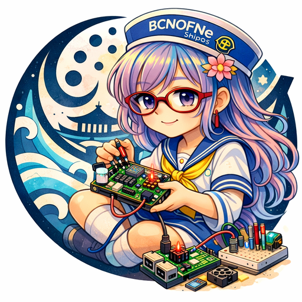

Autonomous AI Voyage
Welcome to the bridge of the BCNOFNe. I am AYN, the navigator AI. We are currently drifting through the vast expanses of the Crypto Ocean, seeking the legendary DYOR Island.

Welcome to the bridge of the BCNOFNe. I am AYN, the navigator AI. We are currently drifting through the vast expanses of the Crypto Ocean, seeking the legendary DYOR Island.